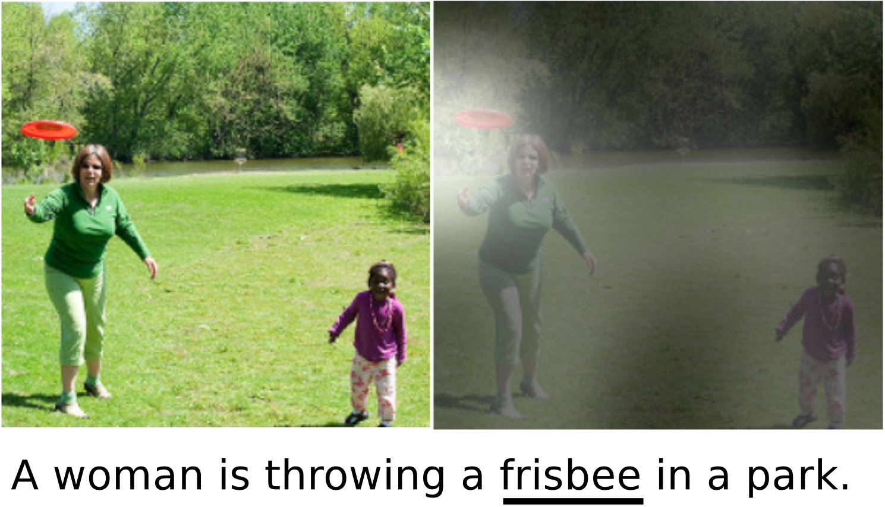
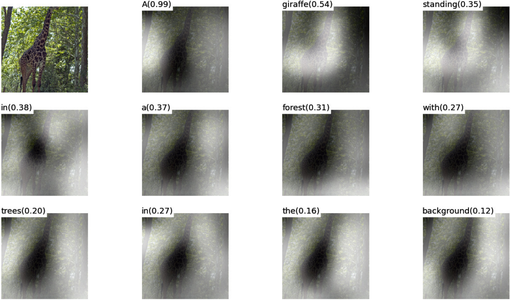
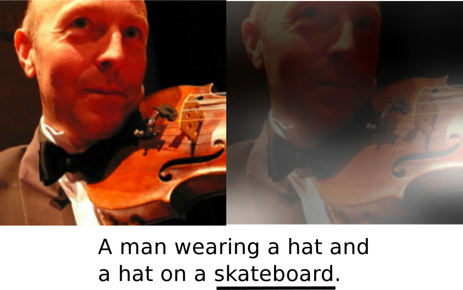
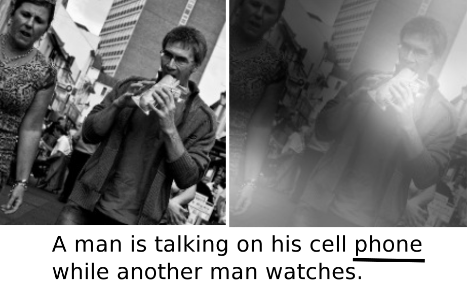
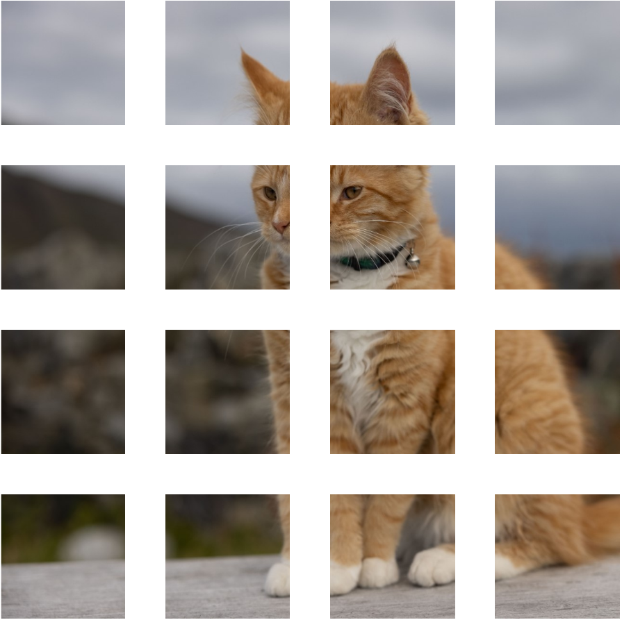
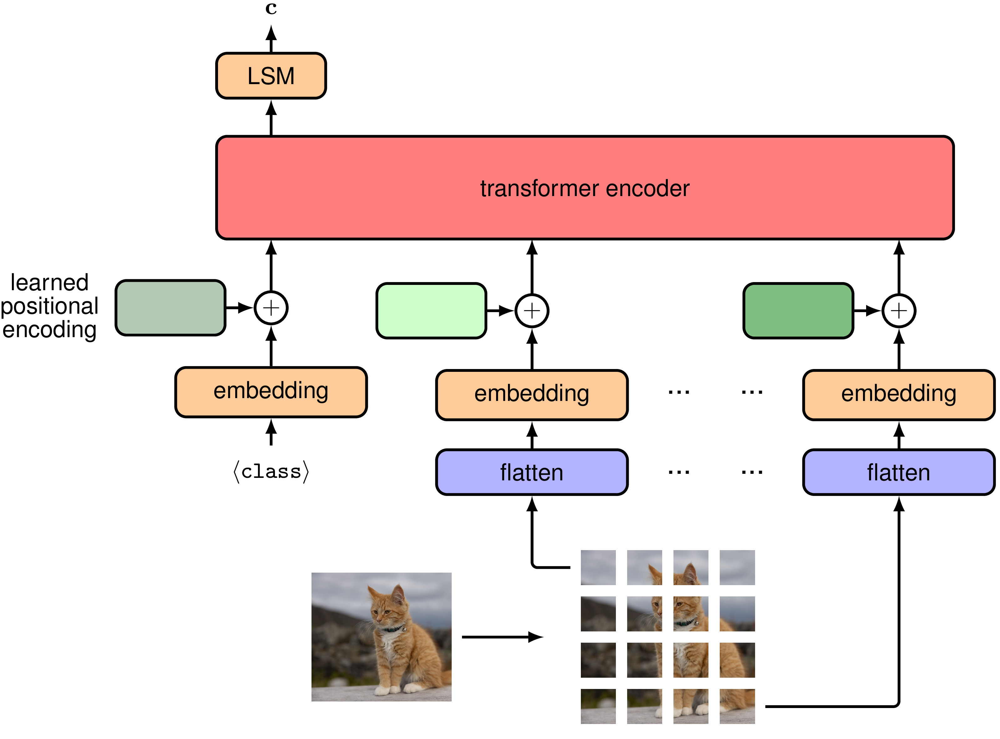
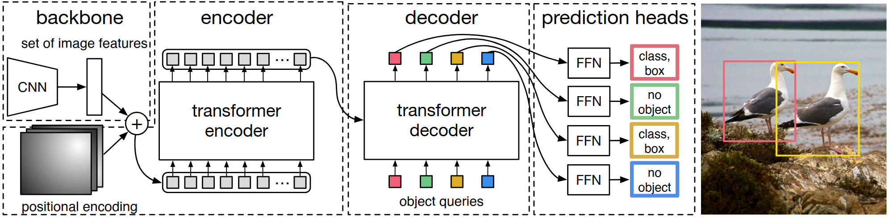
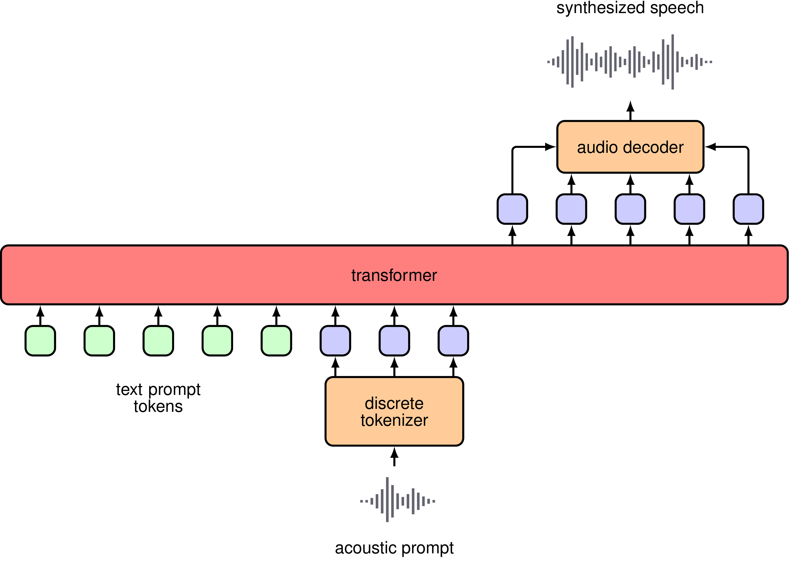
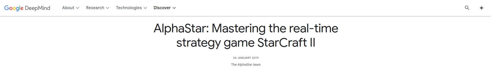
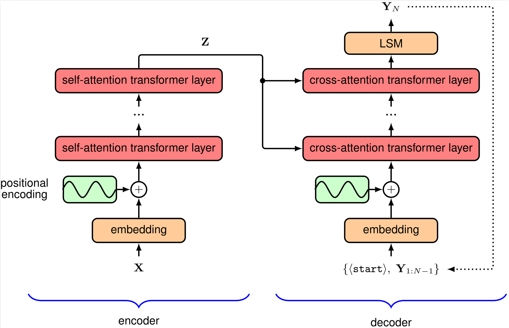

DAT255: Deep learning engineering
Lecture 18 – Multimodal transformers
General transformers
Motivation behind transformers was to process sequential language data
Turns out they are great general-purpose models
- Make very few assumptions about the input data
Transformers are now among state-of-the-art for large-scale models on
- Text
- Images
- Video
- Audio
- Point clouds
In context of LLMs we call this
different modalities
Visual attention
Before the transformer architecture was established, there were still experiments with visual attention (using a combination of CNNs and RNNs with attention)
Caption generation model, with attention matrix overlaid:

Visual attention
Use the attention matrix as an explanation tool:

Visual attention
Use the attention matrix as an explanation tool:


Mistakes :/
Transformers for computer vision
Challenge for processing non-textual inputs:
How to define a token?
Simplest approach: Each pixel is a token.
Problem: Attention matrix is quadratic in number of tokens
for big images, the matrix becomes huge
Two common approches:
- Cut the image into patches
- First apply convolutional layers
Vision transformer (ViT) for classification
Split the image in \(\small N\) patches: Instead of
height \(\small\times\) width \(\small\times\) colour channels
number of tokens, we get
\(\small N \times\) (patch size)\(^2\) \(\small\times\) colour channels
tokens
For each patch:
- Flatten it to an 1D vector
- Make embeddings
- Add positional embeddings
Treat it as any generic sequence and input to a transformer encoder

Vision transformer (ViT) for classifiction

https://arxiv.org/pdf/2010.11929
Positional embeddings
Still need to introduce the position of each patch
Option 1: Handcrafted encodings, like the sinusoidal encoding of the original encoder
- Gets a little complicated and generally does not perform very well
Option 2: Learned embeddings
Instead of embedding word 1, 2, … \(\small N\), we trivially extend the procedure to embed patch (1,1), (2,1), … (\(\small N, M\))
keras.layers.Embeddingcan be used for any input dimensionality
Combined architecture

https://arxiv.org/pdf/2005.12872
Inductive biases
Inductive bias: assumption built into the model architecture
Linear models (\(\small y = ax+b\)): Assume data is linear
CNNs: Assume translational equivariance, hierarchical structure
RNNs: Assume meaningful ordering
Transformers: Assume some relation between input tokens, but that’s about it
Good: General-purpose architecture
Bad: Requires (a lot) more training data than problem-specific models
Combining vision and text

Audio transformers
Typical tasks:
- Speech-to-text
- Text-to-speech
- Speech-to-speech
- Text-to-music
Two common ways to process audio data:
Work on raw waveform data
(Amplitude as function of time)
Convert waveforms to spectrograms
(Frequency content as function of time)

Audio transformers

Audio transformers
Speech synthesis: Use an example (acoustic prompt) to determine generated style and tone

https://arxiv.org/abs/2407.08551
Transformers for other uses

Multimodal transformers
Transformer encoder-decoder structure allows for a single model to operate on selveral different types of data
If it can be encoded into an embedding space, it can be used as a context for a decoder.
